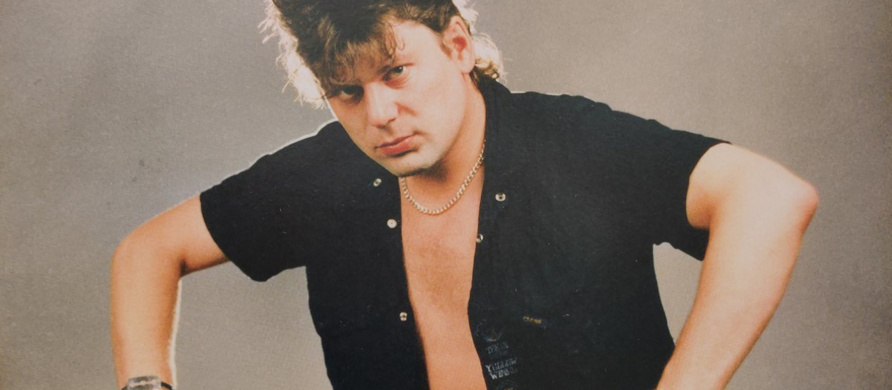

Название и псведоним
<...Ну, это чисто такое местное название в Воронеже, где был рок-клуб, к которому мы принадлежали. Он находился в очень задымлённом районе, и я его так прозвал — «Сектор Газа», и мы в этом клубе постоянно играли, а так как я жил там неподалёку в этом районе, группу я назвал так же — «Сектор Газа». Чисто местное название, я ведь не думал тогда, что мы так раскрутимся, я думал, что мы поиграемся и на этом всё закончится, как и многие коллективы, тогда первые в 85—87 году, когда открылись рок-клубы, вы помните, было очень много команд довольно-таки интересных…>
Юрий (Хой) Клинских
Начало творчества и становление группы
Во второй половине 80-х Юрий знакомится с Александром Кочергой, более известным под псевдонимом Ухват, который с единомышленниками организовал в Воронеже рок-клуб на манер ленинградского. Поначалу Клинских занимается здесь решением организационных вопросов, будучи сотрудником ГАИ, но потом по совету Ухвата, которого поразило неплохое исполнение Юрой цоевских и своих песен, решает создать собственный музыкальный проект. С весны пробует себя в написании песен, а ближе к зиме формируется репертуар будущего «Сектор Газа». Первое время «Сектор Газа» состоял фактически из одного Клинских, выступавшего сольно с гитарой, гитаристами и единожды с бас-гитаристом другой группы Михаилом Финком. Первый постоянный состав сформировался не 27 декабря 1989 года, как указывают многие источники, а в июне 1988 года, когда к Юрию Клинских примыкнул барабанщик Олег Крючков и бас-гитарист Семён Титиевский. В качестве гитариста к коллективу также присоединился некий Макс, который отыграл 5—7 концертов, а затем пропал и на его место пришёл Сергей Тупикин. Группа выступала в местном рок-клубе и быстро стала его звездой. С 1988-го по 1990 год «Сектор Газа» выступал на одной сцене с приезжавшими в Воронеж командами, такими как «Постоянство памяти», «Звуки Му», «Гражданская оборона», «Дети» и др. В апреле 1989 года группа получила приглашение выступить на третьем фестивале рок-клуба в Череповце. Выступление состоялось в ДК «Строитель» на второй день фестиваля и прошло вполне удачно. В результате у коллектива появились первые поклонники за пределами родного города. Годом ранее перестала существовать воронежская рок-группа «Фаэтон», на репетиционной базе которой осталось кое-какое оборудование для звукозаписи. Таким образом, экс-участник группы Андрей Дельцов, который был в ней гитаристом и отвечал за звук, оказался в роли звукорежиссёра и львиная доля местных рокеров стала писаться у него. Летом 1989 года «Сектор» записала в его студии при ДК имени 50-летия Октября магнитоальбомы «Плуги-вуги» и «Колхозный панк». Место клавишника занял Алексей Ушаков (экс-«Фаэтон»). В разгар записи Сергея Тупикина на гитаре сменил Игорь Кущев. Впрочем, из-за низкого качества записи данные альбомы так и не получили широкого распространения. Позже для исполнения женских вокальных партий к написанным песням Юрий Клинских искал вокалистку, по рекомендации Игоря Кущева в группу была приглашена Татьяна Фатеева. Весной 1990 года «Сектор Газа» записал в профессиональной воронежской студии «Black Box» уже небезызвестного Андрея Дельцова альбомы «Зловещие мертвецы» и «Ядрёна вошь». Для аренды студии Юрию пришлось продать собственный мотоцикл «Ява». Далее последовали концерты, так Татьяна фактически вошла в состав группы и выступала ещё в течение трёх лет. Песни Юры Хоя, представляющие собой стилизованные описания жизни как социальных низов, так и провинциального рабочего класса, содержащие разговорную и ненормативную лексику, пользовались популярностью у многих. В то же время группа долгое время не имела возможности выступать за пределами Воронежа, участники её были малоизвестны.
Волна популярности
Всеобщую известность «Сектор Газа» получил лишь в 1990 году после выхода альбомов «Зловещие мертвецы» и «Ядрёна вошь», которые Юрий отправил в Москву с помощью своего знакомого, занимавшегося распространением аудиопродукции[7]. В это время коллектив замечает московский бизнесмен Фидель Симонов. Услышав материалы, он приезжает в Воронеж знакомиться с участниками и вскоре приглашает их для записи следующего альбома, а затем организует им концерты. Так, к началу 1991 года группа получает возможность записать альбом «Ночь перед Рождеством» в Москве на студии «Мир». Незадолго до этого коллектив покинул Олег Крючков, которого сменил Александр Якушев, помогавший группе ранее, подменяя Крючкова на концертах. Сразу после записи альбома «Ночь перед Рождеством» из состава был уволен бас-гитарист Семён Титиевский. Затем из-за творческих разногласий покидает коллектив Игорь Кущев, полностью занявшись проектом «Школа», созданным им ещё в 1989 году. Место гитариста концертного состава на какое-то время занимает Андрей Дельцов. Впрочем, через несколько месяцев он становится звукорежиссёром группы, а на его место приглашается московский гитарист Владимир Лобанов (экс-«Легион»).